Technical kitchen cabinet design, production documentation, cut lists and fabrication support for professional projects.
View ProjectA practical approach to kitchen cabinetry that connects design, documentation, manufacturing and final execution.
Industrial Engineer and Kitchen Cabinet Design & Production Specialist with hands-on experience in cabinet planning, technical documentation, fabrication, assembly and installation.
My work focuses on translating design concepts into clear and practical production information.
Measurement → Planning → 3D Design → Technical Documentation → Production → Assembly → Installation
Technical and production-oriented services for kitchen cabinetry and related interior projects.
Development of practical 3D cabinet models for design review and project coordination.
Clear 2D layouts, cabinet unit identification and technical documentation.
Detailed production information, cut lists, specifications and assembly documentation.
Structured cabinet component lists prepared for fabrication and material planning.
MDF cutting plans focused on material efficiency and reduction of waste.
Production, assembly and execution coordination from documentation through installation.
Kitchen Cabinet Design & Production
A complete cabinetry workflow developed from planning and 3D design through technical documentation, production preparation and final on-site execution.
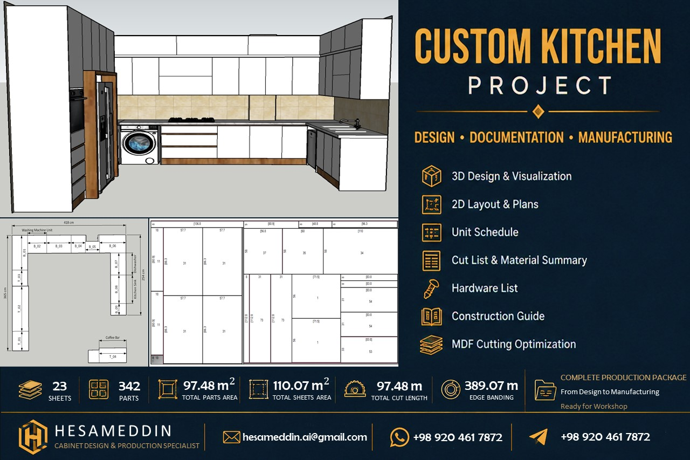
A structured workflow connecting design information with real-world manufacturing.
Accurate site dimensions and project information.
Cabinet layout and unit placement.
Cabinet modeling and design review.
Drawings, schedules and specifications.
Fabrication and material preparation.
Optimized MDF cutting plan.
Cabinet assembly and preparation.
Final on-site execution.
Structured documentation prepared to connect design information with fabrication and assembly.
Cabinet production data, component information and project schedules.
View Documentation →General fabrication and assembly conventions used in the documentation system.
View Guide →Cutting optimization prepared for panel processing.
View Cutting PlanDownload Download CSV Package
Selected photographs from the completed on-site installation.
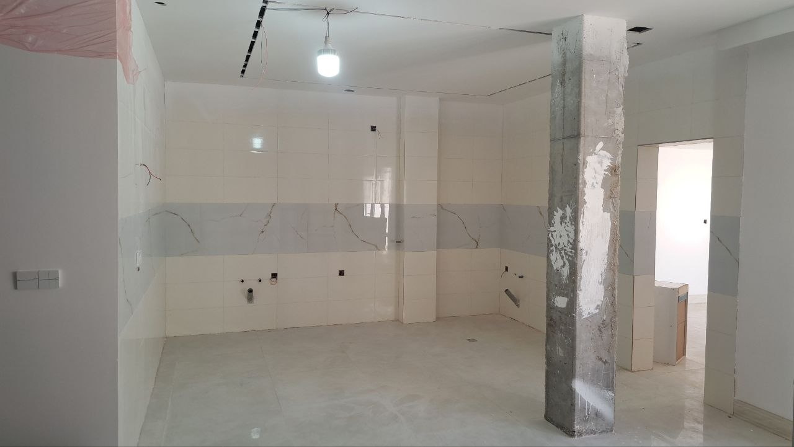
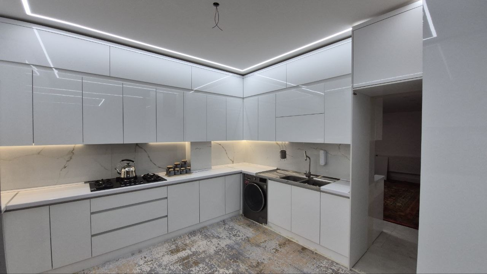
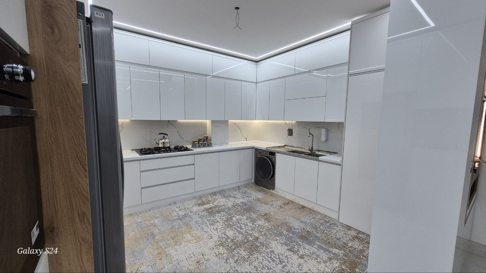
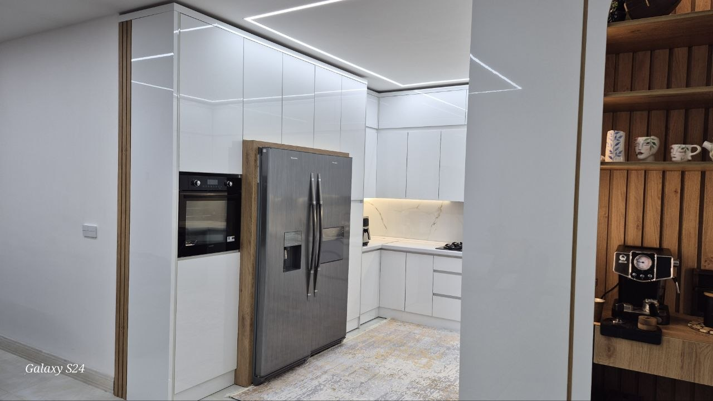
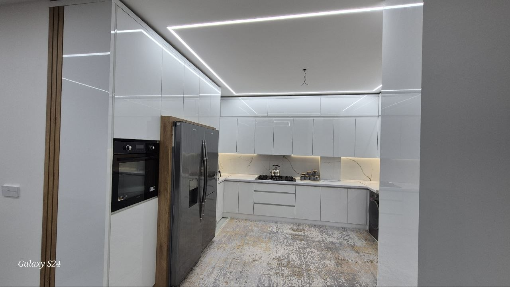
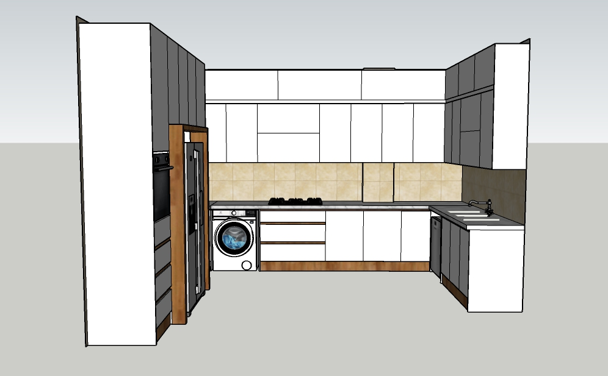
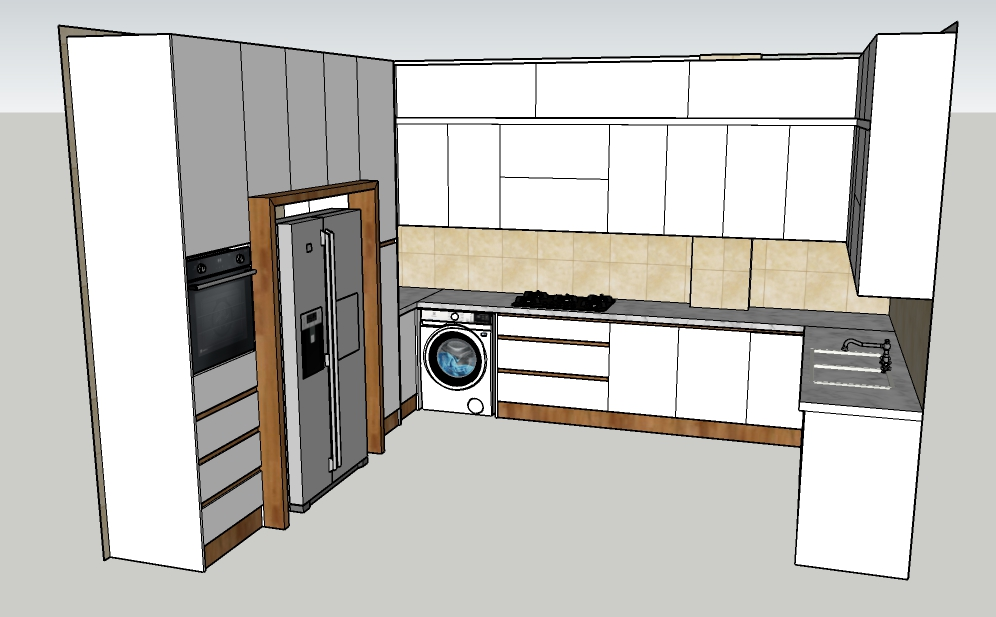
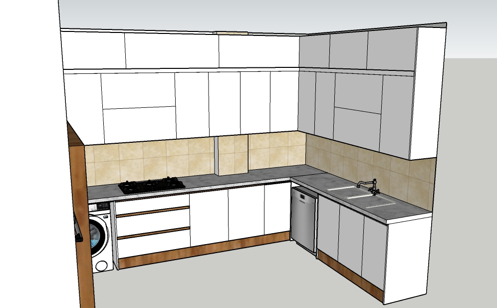
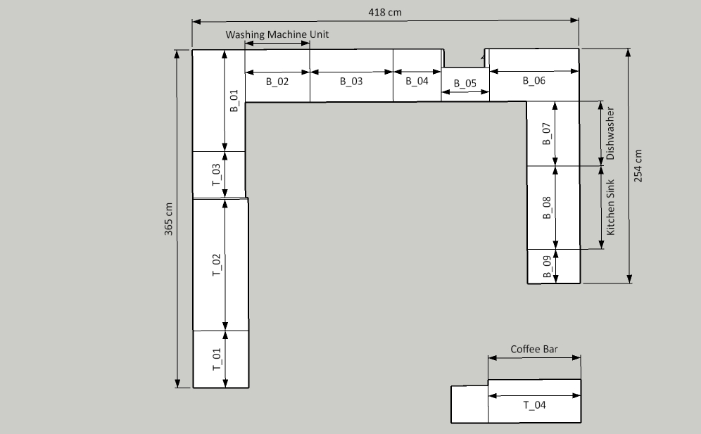
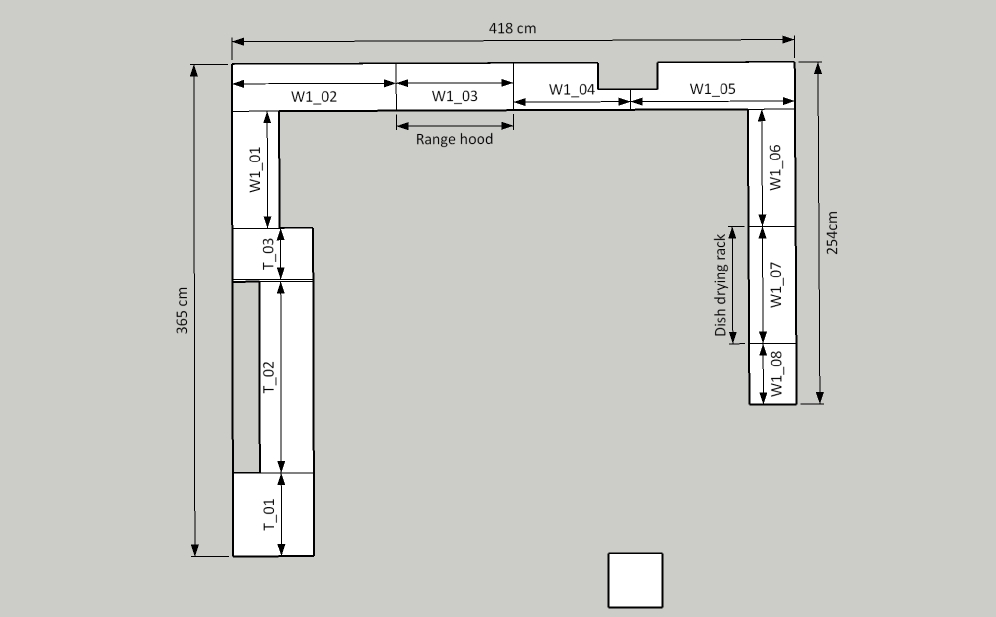
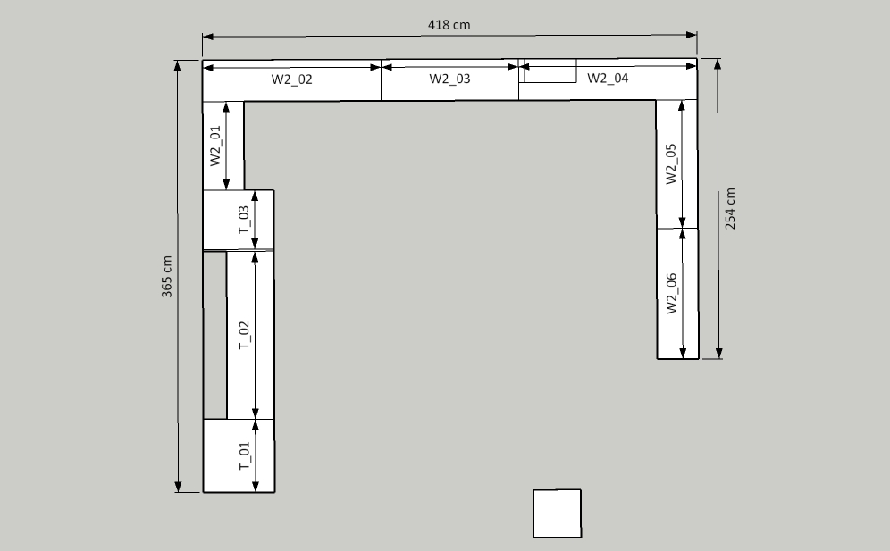
Available for remote collaboration on kitchen cabinetry, millwork and technical production documentation projects.